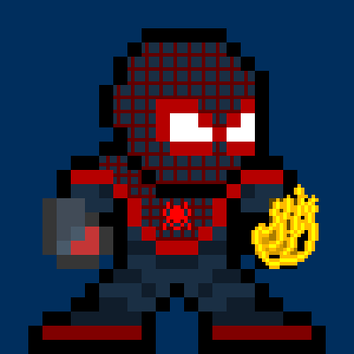

normalthe right side of the photothe left side of the photoa box shadowborder radius of 100%border radius of 25%border radius of 10%purple borderadded 100% sepia100% grey scale10px blurdark to photo with brightness 50%200% contrasthue rotate 90 degreesinverted colorsdifferent opacitymore saturationfunner shadowanother shadow